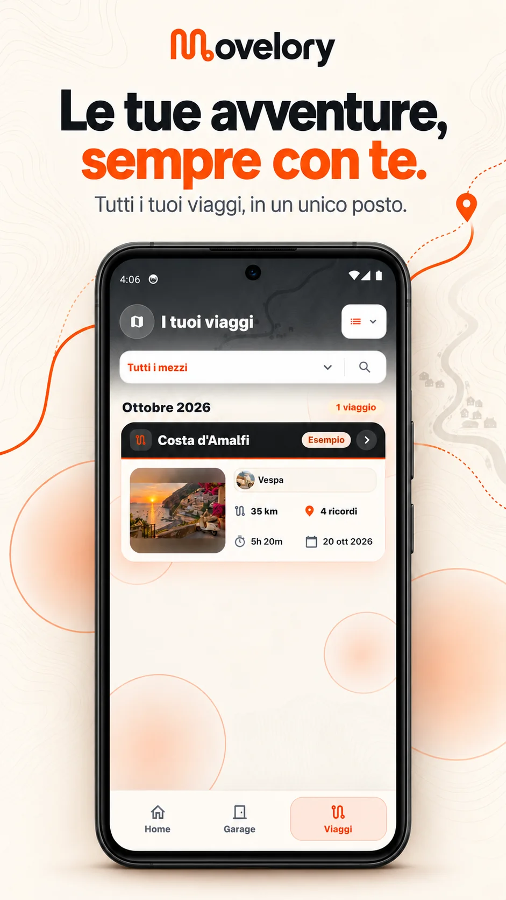
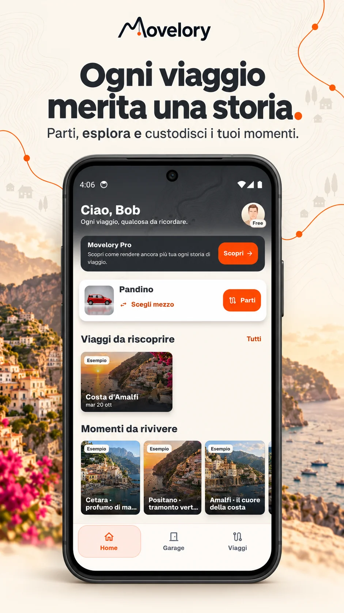
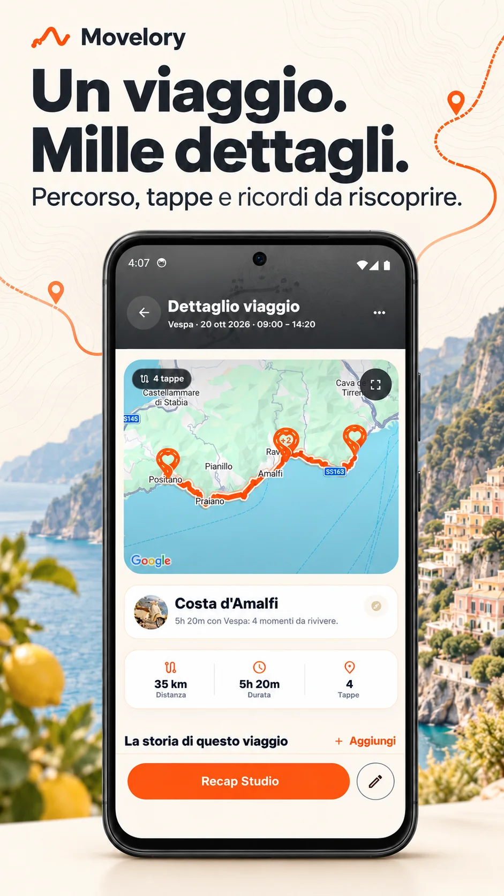
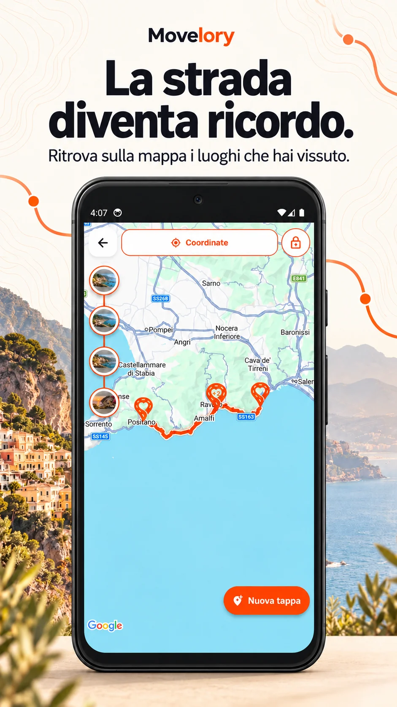
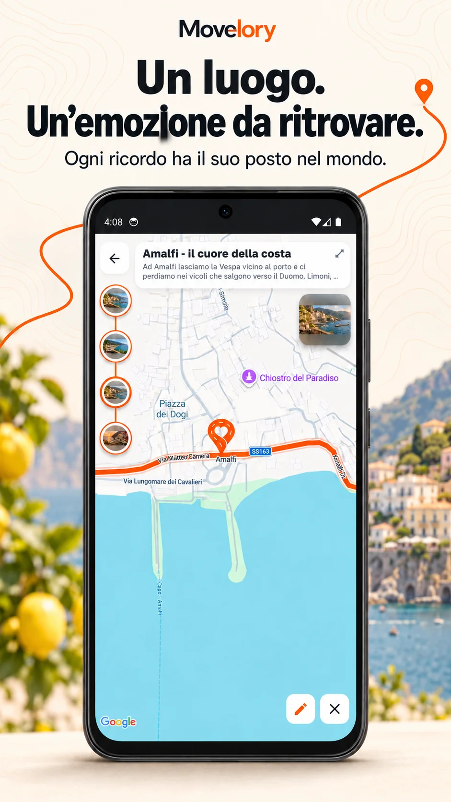
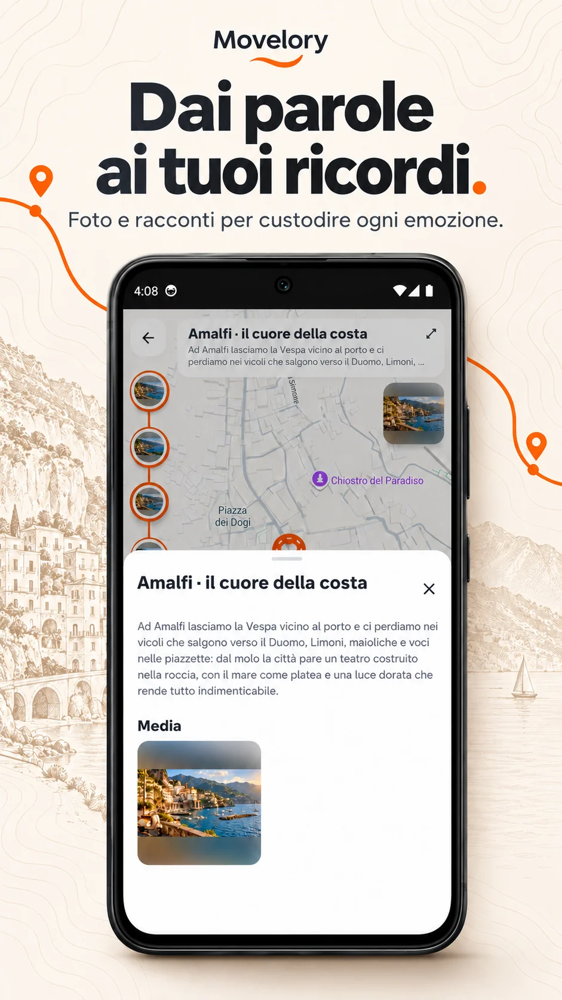
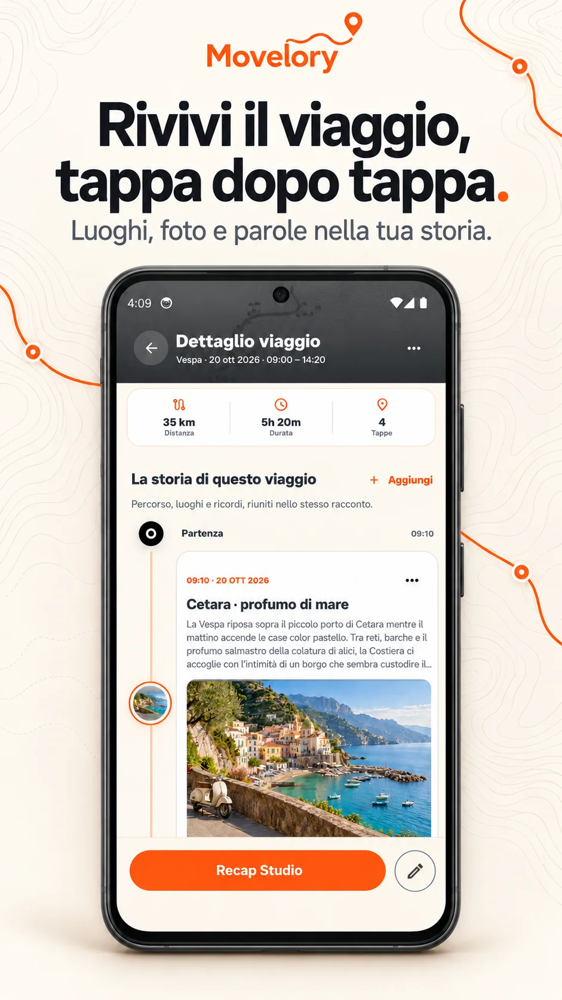
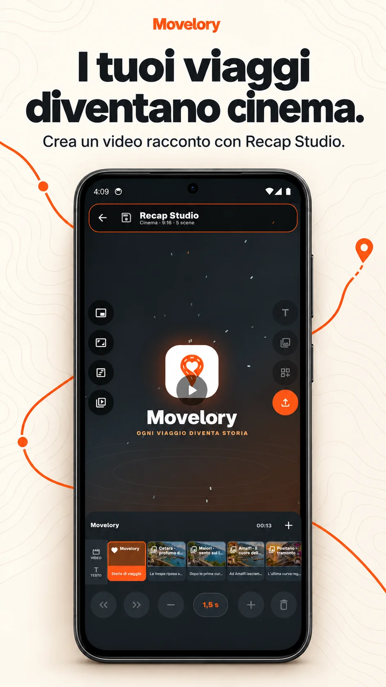

Le tue avventure, insieme.
Raccogli i tuoi viaggi in un unico posto e ritrova quello che vuoi rivivere.
Il tuo diario di viaggio
La strada che percorri. I luoghi in cui ti fermi. I momenti da custodire. Ritrovali insieme in Movelory, dalla prima partenza alla storia che rivivi al ritorno.

Movelory
Immagini promozionali che illustrano l’app.

Raccogli i tuoi viaggi in un unico posto e ritrova quello che vuoi rivivere.

Riscopri il percorso, le tappe e i ricordi che rendono ogni viaggio tuo.

Registra un viaggio che avvii e ritrova sulla mappa il percorso e i luoghi dei tuoi ricordi.
Guarda la registrazione GPS
Unisci foto, note e luoghi, per trasformare una sosta in un momento da ritrovare.

Custodisci l’emozione di un luogo attraverso le foto e le parole che scegli per raccontarlo.

Segui luoghi, foto e parole che raccontano la storia del tuo viaggio.

Crea un racconto video del tuo viaggio con Recap Studio e guarda la demo per scoprirlo in azione.
Guarda Recap StudioPrima di tutto, in locale
Movelory conserva viaggi, tracce GPS e ricordi nello spazio privato del tuo dispositivo, senza richiedere un account Movelory. Nell’informativa trovi i dettagli su mappe, permessi e servizi per gli abbonamenti.